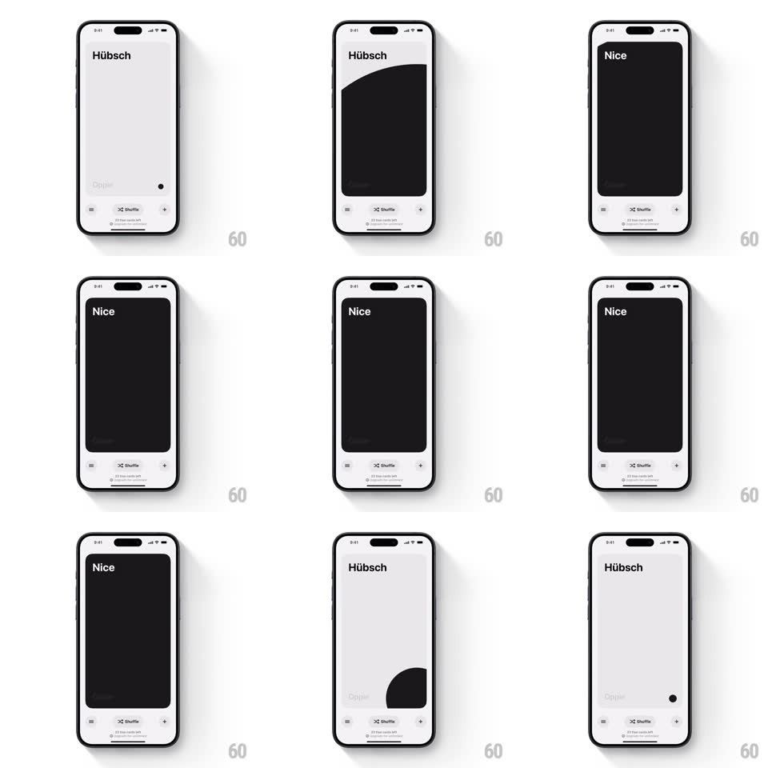

Media
Frame-by-frame

Rebuild this interaction 1:1: Oppie's translate card - tap the word card and a circular wipe blooms from the tap point, morphing the card into a full-screen translation view with a dramatic color flip.

Rebuild this interaction 1:1: Oppie's translate card - tap the word card and a circular wipe blooms from the tap point, morphing the card into a full-screen translation view with a dramatic color flip.
## Integration
Integration: stack-agnostic spec - springs given as stiffness/damping, timed motions as duration + curve; map every value to your framework and animation library of choice.
## Scene
A light-gray vocabulary app: a large card showing the word ("Hübsch") in bold with its translation ghosted below, above a bottom bar (menu, Shuffle with remaining-card count, add). Tapping flips the card into its answer state - a full-bleed dark (or vibrant accent) view with the translation ("Nice") in the same bold position.
## Motion spec
Pattern: circular-reveal card morph.
- Tap: an iris wipe starts at the tap point - a circle of the answer state's background expands (radius 0 to screen diagonal, 500ms, ease-out), revealing the dark/vibrant answer card beneath.
- The card's rounded rect expands to full-bleed as the wipe progresses (corner radius 24px to 0, matched timing), so the wipe and the morph read as one motion.
- The word crossfades to the translation at the wipe's leading edge - letters are revealed by the circle, not faded globally.
- The bottom bar persists through the morph (it slides down 8px and returns, 200ms, as a subtle acknowledgment).
- Tap again (or tap the close affordance): the iris contracts back from the tap point, restoring the question card (450ms, ease-in-out).
- Shuffle swaps cards with a quick horizontal slide-fade (250ms), the count ticking down.
## Calibration
- The wipe origin is the exact tap point, not the card center.
- Word position must be identical in both states so the crossfade reads as the word transforming.
## Reduced motion
Simple crossfade between word and translation states.
## Don't miss
- The color flip is the payoff: question state is light and quiet, answer state is dark or saturated - never two similar backgrounds.
- Keep the giant bold word treatment; the type fills the card's upper half.